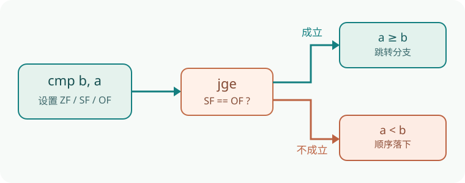
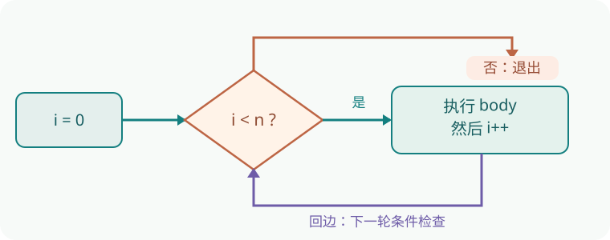

CSAPP · 05 / MACHINE-LEVEL PROGRAMMING
一条 if，究竟让 CPU 改变了什么？
从 cmp 设置条件码，到 jcc 选择下一条指令，再到循环的回边和 switch 的分派。本章要学的不是“背汇编”，而是把高级语言的判断还原成可追踪的控制流图。
01 · 比较并不产生布尔值，它先留下“痕迹”
假设有 if (a < b)。在 x86-64 中，一个常见实现不是先把真假写进变量，而是用 cmp 做一次不保存结果的减法：让 CPU 更新条件码，再由下一条指令解释这些位。
/* C：两个参数均为 long，假设 System V x86-64 ABI */
long minimum(long a, long b) {
if (a < b) return a;
return b;
}
/* AT&T 语法的教学示意：真实编译器可能选 cmov */
cmpq %rsi, %rdi # 比较 a - b，不改动 a 或 b
jge .Lge # signed a >= b 时跳转
movq %rdi, %rax # a < b
ret
.Lge:
movq %rsi, %rax # a >= b
ret条件码不是普通的全局“真假开关”，而是 EFLAGS/RFLAGS 中由特定指令定义的状态位。本例关心四个：
| 条件码 | 含义 | 读它时要留意 |
|---|---|---|
ZF | 结果为零 | je / jne 常检查它 |
SF | 结果的符号位 | 不能单凭它推断有符号大小 |
OF | 有符号溢出 | 有符号分支须与 SF 配合 |
CF | 无符号减法借位 | jb / jae 用于无符号比较 |
因此在同一对位模式上，有符号与无符号分支可能得到相反答案。例如 8 位位模式 1111 1111 可以解释为 -1，也可以解释为 255。
检查方法：jl 在 SF ≠ OF 时跳转；jb 在 CF = 1 时跳转。两者的英文缩写都像“less”，但类型语义不同。
02 · 一次分支，就是对下一条指令地址作选择
控制流图把顺序执行的指令聚合成“基本块”；一个基本块内部没有中途进入或离开的普通分支，末尾才决定走向哪个后继块。图中用 jge 绘出 a < b 的双路选择：

cmp 只更新条件码，jge 才改变控制流。箭头表示逻辑后继，不代表两条 ret 必须如此布局。一个 if-else 可以用条件跳转加无条件跳转构成；简单表达式也可能被编译为 setcc（生成 0/1）或 cmovcc（条件传送），减少分支。不能由 C 语法机械断言会出现哪条机器指令。
不要强行把所有分支改成 cmov：条件传送只适用于可安全提前计算的候选值；若分支有 I/O、副作用或可能触发非法内存访问，不能把“两个路径都执行”当成等价变换。性能也需实测。
读懂有符号与无符号跳转
| 条件（比较 a 与 b） | 有符号 | 无符号 |
|---|---|---|
a == b | je（ZF = 1） | |
a < b | jl | jb |
a <= b | jle | jbe |
a >= b | jge | jae |
表格针对 cmp b, a 之后的条件解读。AT&T 汇编的两个操作数顺序是“源，目的”，等价比较 a - b；Intel 语法的显示顺序不同。
03 · 循环不是特殊魔法，而是一条回边
把 for (初始化; 条件; 更新) 拆开，你会看到一种非常普通的控制结构：初始化一次，判断条件；为真执行主体和更新，再跳回判断；为假退出。

do-while 则先执行主体再判断。#include <stddef.h>
long sum_positive(const int *a, size_t n) {
long sum = 0;
for (size_t i = 0; i < n; ++i) {
if (a[i] > 0) sum += a[i];
}
return sum;
}理解循环汇编的最快办法是先找 退出条件、再找 回跳边、最后检查 索引更新。编译器可能将 for 规范化成 while 形状，也可能循环展开或向量化；图是源语言语义的控制流，不是固定的优化输出。
边界推理：i < n 的最后一次合法迭代是 i = n - 1（前提为 n > 0）。当 n = 0，循环体一次也不执行；不要通过访问 a[n] 来“验证”循环结果。
04 · switch 可能是多次比较，也可能是一次索引跳转
switch 本质是从一个输入值选择某个分支。若 case 值密集，编译器可能先检查索引范围，再用跳转表查找目标地址；若很稀疏、分支很少或可用算术化简，也可能生成比较链、二分跳转或完全不同的代码。
int classify(int x) {
switch (x) {
case 0: return 4;
case 1: return 7;
case 2: return 9;
default: return -1;
}
}
/* 可能的逻辑流程，不是承诺的编译结果：
检查 0 <= x <= 2 → 选择 case 目标；否则走 default。
表项是代码地址（或相对位移），不是 case 返回值。 */读 switch 汇编时先辨认索引的边界检查，再区分查到的是“值”还是“跳转目标”。break 会防止普通 fall-through；有意贯穿多个 case 的代码要明确标注，避免漏写导致错误。
05 · 让编译器展示证据，而不是猜结果
把前面的 C 示例保存为 flow.c，在 x86-64 Linux + GCC/Clang 上比较不同优化等级输出：
cc -O0 -S -fno-omit-frame-pointer flow.c -o flow-O0.s
cc -O2 -S flow.c -o flow-O2.s
cc -O2 -c flow.c -o flow.o
objdump -dr flow.o- 找到比较指令。它操作的位宽是多少？实际相减顺序是
a - b还是b - a？ - 找到跳转目标和基本块入口。哪条边是跳转，哪条边是顺序落下？
- 比较
-O0与-O2：是否出现条件传送、循环展开或不同的 case 分派？这些属于编译选择，而非 C 语言保证。
实验依赖本机工具链和目标架构。汇编清单、指令选择和栈布局随编译器、版本、目标和标志改变；本章代码块中的汇编仅为可推导的教学示意。
查证与下一步
把握三个问题：哪条指令写标志？哪条指令读取标志？哪里存在回边或多路分派？下一章将让这些控制流跨过函数边界，观察 call、返回地址与调用栈。
- CS:APP 第三版官方资源：机器级程序表示的系统化背景。本教程第 5 讲是站内拆分编号，不对应教科书第 5 章。
- Intel® 64 and IA-32 Software Developer’s Manuals：
CMP、条件码及Jcc指令语义。 - GCC Optimize Options：不同优化等级的行为背景。